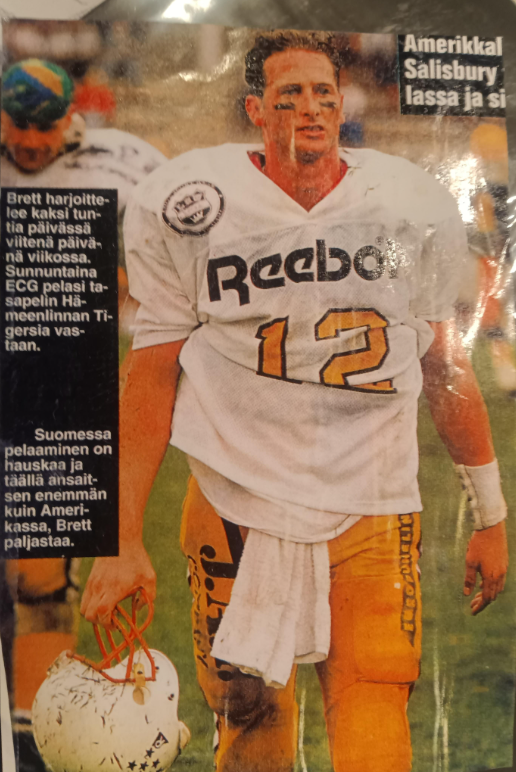

| Born | October 11, 1968 Dayton, Ohio, U.S. |
| Nationality | American |
| Known for | International male model; quarterback; founder, House of Salisbury |
| Rankings | #15, L’Uomo Vogue Top 25 Male Models Ever #96 Male Model Index #86 MaleIconic #44 UOMO Modello (9.1) |
| Featured in |
The 100: The Definitive Record of the Greatest Male Models in History Top 100 on Kindle — James Conrad, Editor Read on Kindle · $2.95 → |
Brett Salisbury (born October 11, 1968, in Dayton, Ohio) is an American creator, former quarterback, and international male model, and the founder of House of Salisbury, an independent creative house spanning fragrance, music, publishing, and modeling history documentation.[1] He is ranked #15 on L’Uomo Vogue’s Top 25 Male Models Ever list, published via SELF Magazine and Yahoo! Shine on 22 August 2012.[2] His brother is former NFL quarterback Sean Salisbury.
Early life
Salisbury was born in Dayton, Ohio, and grew up in Escondido, California. As a youth pitcher, he was part of an Escondido Little League team that finished fifth at the 1981 Little League World Series.[3] He attended Orange Glen High School, where he was named Player of the Week by the Los Angeles Times as the school’s standout quarterback.[4]
Football career

Salisbury graduated from Orange Glen in 1986 and accepted a football scholarship to Brigham Young University (BYU), where he played behind future Heisman Trophy winner Ty Detmer.[5] After two seasons he transferred to Palomar College, where he was named a JC Gridwire All-American and the top offensive player in California. He set multiple passing and touchdown records at Palomar that still stand.[6]
In 1991 he transferred to the University of Oregon, where he was regarded as the successor to Bill Musgrave. A hernia operation during training camp cost him the starting position; he started three games behind Danny O’Neil before O’Neil’s injury.[7] He left Oregon in 1992 seeking a starting role at the Division II level.[8]
After a year away from the game, Salisbury enrolled at Wayne State College in 1993 and led the Wildcats to a 9–1 record. He ranked second in Division II in passing efficiency (166.3) and third in total offense (373.2 yards per game). His 1993 season produced two NCAA Division II records documented in the NCAA’s official statistical record: the highest average gain per attempt in a season (8.8 yards, minimum 350 attempts) across 424 attempts and 3,732 yards, and the most games in a single season with at least 300 yards of total offense (10 games).[9] He was nominated for the Harlon Hill Award, given to Division II’s top player.[10]
Following his college career, Salisbury played in Europe’s EFAF league with the Helsinki Giants (1994–1996) and later the Prague Panthers.[11][12]
Modeling career
Upon arriving in Helsinki in 1994 to play quarterback, Salisbury was called to Milan, where his international modeling career began. He worked exclusively as a request model — not subject to open castings — a designation reserved for the highest tier of the industry. Campaigns included Nokia (global), Nexxus Hair (global), Paulig (regional), and the Nexxus Axios Man campaign shot in Los Angeles in December 1996.[1][13] He worked across Armani to Laura Biagiotti, with the leading designers and photographers of the era.[2]
He signed with Modelplan Milan and Riccardo Gay Model Management, part of an eighty-two man roster that also included Marcus Schenkenberg, Joel West, and Andrea Boccaletti, and was photographed by Maurizio Montani in September 1995 in the image that launched his international career.[19]
Well-known Helsinki booker Laila Snellman described Salisbury as a “national celebrity” in Finland after he was voted the country’s sexiest man at the peak of his career, noting that he was “the most photographed and requested special model in Scandinavian history, who filled the room with his humility and charisma.”[2]
Salisbury retired from professional modeling in 2002 after more than 500 editorial and runway appearances. A 2002 ModelWatch interview by senior editor Jed Medina was headlined “Brett Salisbury: The Story of a Male Supermodel.”[2]
The origin of Salisbury’s lifelong search — which would eventually produce MORPH by House of Salisbury, SLOAN, and his memoir — is traced to a single moment described in You’re Welcome:
At fourteen years old, living in Escondido, California, I stopped into Thrifties while my mom shopped at Alpha Beta in the winter of 1982. I had always been interested in fragrance — that search would come to define the next five decades of my life — and I was thumbing through a GQ when a photograph stopped me. I didn’t know who that man was. I just looked at him and said: I want to be like him. (Michael Flinn Male Model) — Brett Salisbury, You’re Welcome (House of Salisbury, 2026)
Recognition
Salisbury is ranked #15 on L’Uomo Vogue’s Top 25 Male Models Ever list (Yahoo! Shine, 22 August 2012). The list noted that his primary criticism was leaving the markets of France, Milan, and Scandinavia too early in favor of a sports and nutrition career in the United States, and that he would likely have ranked in the top ten had he continued.[2]
He is ranked #96 on the Male Model Index and #86 on MaleIconic — The 100 Greatest Male Models of All Time.[15][16]
He is ranked #44 on the “By Rank” column of UOMO Modello’s Top 50 Male Models of All Time, with a separate Power Ranking of eighteenth, a rare dual-career entry recognized as both an elite international model and a college quarterback.[20]
He is also profiled in The Greatest 25, the editorial record published by The Commercial Male documenting the complete history behind L’Uomo Vogue’s original Top 25 list — describing Salisbury’s more than 500 print and runway jobs completed between September 1994 and August 1998 across Helsinki, Milan, and Los Angeles as a volume no other model in the documented history of the industry has matched at that commercial tier in that compressed a timeframe.[21]
L’Uomo Vogue’s Top 25 — complete list
The following twenty-five individuals appear on L’Uomo Vogue’s Top 25 Male Models Ever list (Yahoo! Shine, 22 August 2012):[2]
- Mark Vanderloo — Dutch · Hugo Boss, Calvin Klein, DKNY
- Michael Flinn — American · Hugo Boss 1982–1993
- Marcus Schenkenberg — Swedish · Calvin Klein, Versace
- Bruce Hulse — American · GQ, Paris, Barbados
- Jeff Aquilon — American · pioneer of the male supermodel era
- Jason Lewis — American · Guess, Tommy Hilfiger, Hugo Boss
- Cameron Alborzian — British/Iranian · Valentino, Armani, Gucci
- Robert Konjic — Swedish-Croatian · Gucci, Louis Vuitton, Armani
- Rick Dietz — American · Valentino
- Michael Bergin — American · Calvin Klein
- Alex Lundqvist — Swedish · Versace, Lagerfeld, Guess
- Miles O’Keeffe — American · GQ, M The Civilized Man
- Tyson Beckford — American/Jamaican American · Ralph Lauren Polo Sport
- Sean O’Pry — American · Models.com #1, Forbes 2009
- Brett Salisbury — American · Helsinki, Milan, Nexxus — Axios Man
- Lars Burmeister — German · Hugo Boss, Acqua di Giò
- Ted McGinley — American · GQ
- Vincent Gallo — American · Calvin Klein, Richard Avedon
- Antonio Sabato Jr. — Italian-American · Calvin Klein
- Hoyt Richards — American · first male supermodel, Versace, Ralph Lauren
Places 25–21 (not depicted in the original article): Karl Lindman, Kerry Justin Degman, John Pearson, Tyson Ballou and Tony Ward.[2]
Of the twenty-five, twenty-two also appear in both the Male Model Index and MaleIconic rankings. The exceptions are Miles O’Keeffe, Ted McGinley, and Vincent Gallo.[15][16]
House of Salisbury · MORPH · SLOAN
Salisbury is the founder of House of Salisbury, an interconnected creative ecosystem spanning fragrance, music, publishing, and archival documentation of male modeling history.
MORPH by House of Salisbury launched on 28 May 2026, the result of a fragrance search that began in 1977 when a fifth-grade teacher’s scent — described by Salisbury as calm, clean, masculine, and authoritative — set him on a 49-year pursuit, documented on the Scents That Changed the World page.[17] SLOAN, his audiovisual dance-pop project, has released 19 tracks on Spotify.[18] His memoir, You’re Welcome: How Sleeping on the Floor Changed Everything, is published through Ingram and available on Google Play Books, Amazon, and other platforms.[14]
The House of Salisbury creator page documents the full scope of the ecosystem, which Salisbury has described as a system where all roads eventually lead to morphfragrance.com.[1]